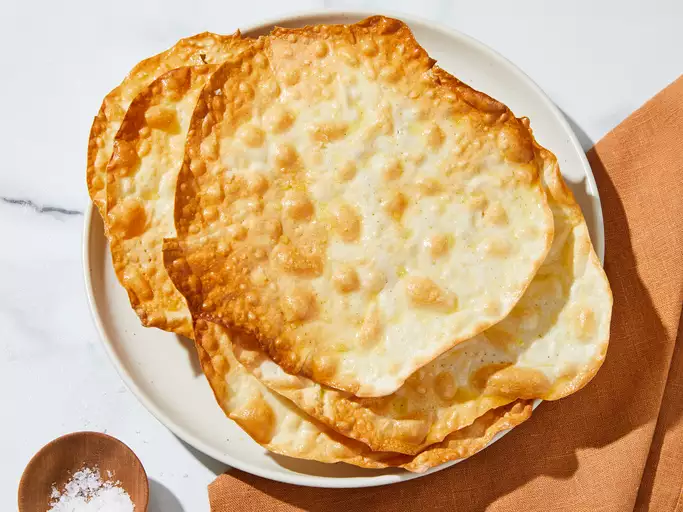

|
Matzah
Home
Matzah

Description
Matzah, or matzo, is a crispy unleavened bread that's eaten during Passover. Tradition dictates the matzah should
be
made and baked within 18 minutes. Baking at a high temperature helps you achieve the perfect crunch.
Ingredients
- 1 teaspoon all-purpose flour for dusting
- 1 cup all-purpose flour
- ⅓ cup water, or more if needed
- ½ teaspoon kosher salt, or as needed (Optional)
- 1 teaspoon olive oil, or as needed (Optional)
Steps
- Preheat the oven to 475 degrees F (245 degrees C). Move an oven rack to the top position. Preheat a heavy
baking sheetin the oven.
- Dust a clean work surface and a rolling pin with 1 teaspoon flour, or as needed.
- Place 1 cup flour into a mixing bowl; set a timer for 16 minutes (18 minutes maximum).
Start the timer; pour water, 1 tablespoon at a time, into flour. Stir with a fork until dough forms a rough
ball.
- Transfer dough to the prepared work surface; knead rapidly and firmly until smooth, 30 seconds to 1 minute.
- Divide dough into 4 equal-sized pieces; cut each piece in half to get 8 pieces. Swiftly roll each piece into
a ball.
Working from the center, roll out each dough piece into a 5-inch-diameter round, dusting with flour as
needed. Continue
to gradually roll dough out to a diameter of about 8 inches, increasing each size by about 1 inch, then
letting dough
rest for a few seconds before rolling again to the finished size. The dough rounds will be very thin.
- Use a fork to quickly pierce through each dough round about 25 times, all over, to prevent rising. Flip
dough over and
pierce each piece again 25 times.
- With at least 4-5 minutes left on the timer, remove the hot baking sheet from the preheated oven and place
dough rounds
onto the baking sheet.
- Bake on the top rack in the preheated oven for 2 minutes; flip matzah over and bake until lightly browned
and crisp,
about 2 more minutes.
- Transfer to a wire rack to cool. Use a brush to lightly anoint each matzah with olive oil. Season generously
with salt.